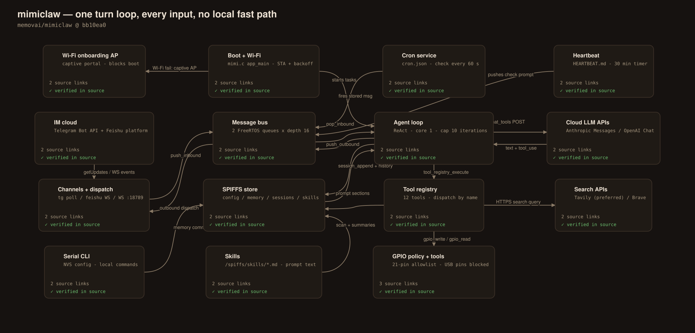
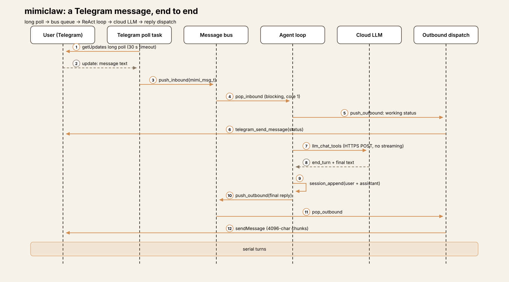
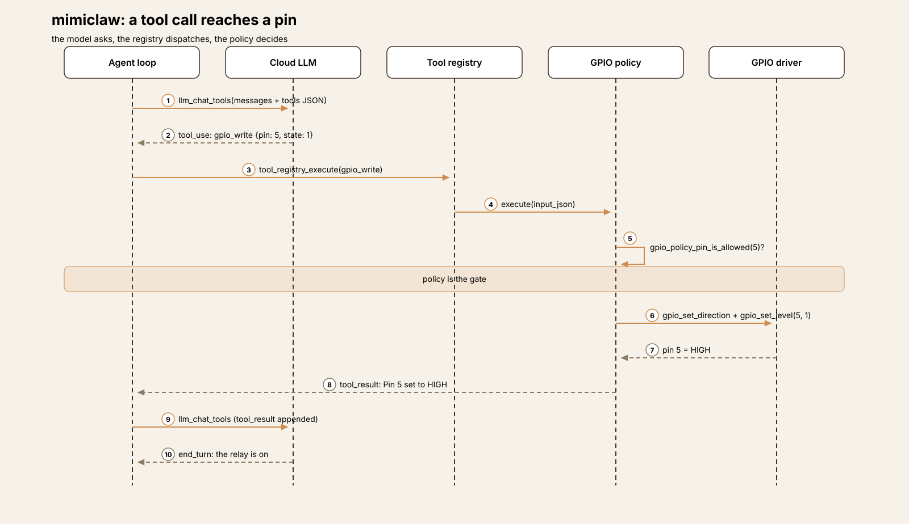
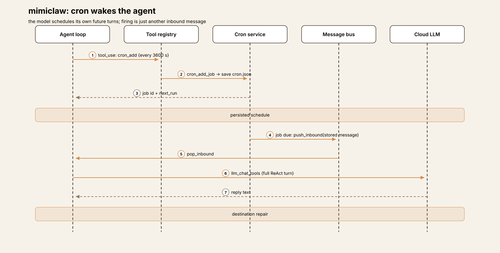
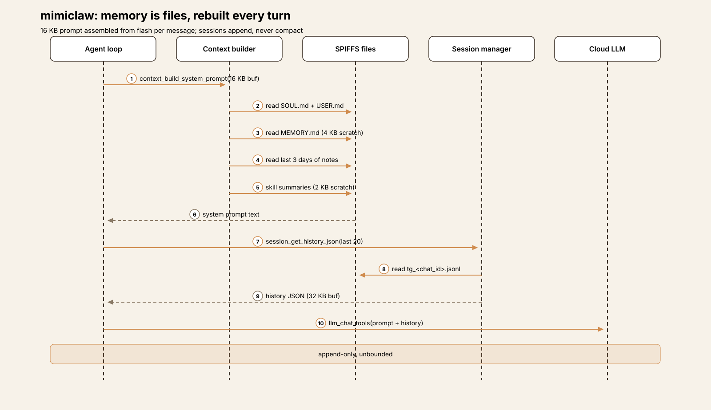
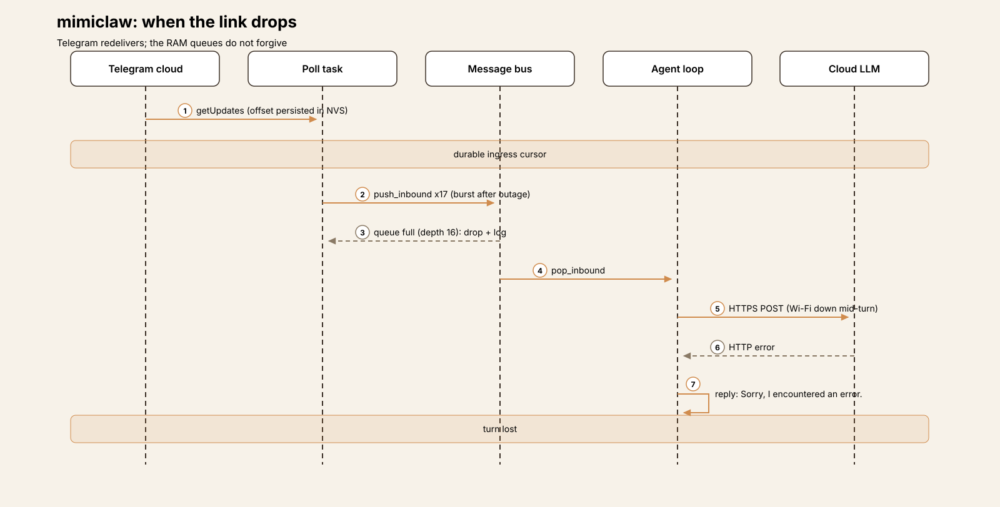

Embedded Harness Anatomy E2: MimiClaw — the turn loop that moved onto the chip
Series: Embedded Harness Anatomy — top-down dissections of agent harnesses that run on microcontrollers, grounded in verifiable pinned firmware. Every behavioral claim below carries a footnote to a pinned GitHub permalink; the full evidence lives in the endnotes.
Version block
- Repo: memovai/mimiclaw
- Pinned: tag
v0.1.1→bb10ea0149080d506d920c09054f4c5b20409de2(2026-03-17)1 - Language: C, on ESP-IDF (Espressif's IoT Development Framework —
the SDK and build system for ESP32 chips) with FreeRTOS tasks. The
component manifest requires ESP-IDF
>=5.5.0,<5.6.02 - License: MIT3
- Claim under test: "The world's first AI assistant (OpenClaw) on a $5 chip. No Linux. No Node.js. Just pure C" — a personal assistant you message on Telegram, with an agent loop, tools, local memory, cron jobs, and heartbeats, all running on one ESP32-S34
One clarification before anything else, because the name invites the wrong picture: MimiClaw is not a client of an OpenClaw gateway. Nothing in the tree speaks an OpenClaw protocol, pairs with a host, or offloads the loop. The README's own acknowledgment is the accurate framing — "Inspired by OpenClaw and Nanobot. MimiClaw reimplements the core AI agent architecture for embedded hardware"5. The gateway, the loop, the tools, and the memory all live on the microcontroller; the only things in the cloud are the model API and the messaging platforms. Where E1 (ESP-Claw) dissolved the turn loop into an event bus, MimiClaw does the opposite: it takes the desktop turn loop — the OpenClaw/Nanobot shape — and transplants it, intact, onto bare metal.
Scale, for orientation: the tree is 96 files; the firmware is roughly
7,748 lines of C under main/. The big files are serial_cli.c
(1,083 lines), feishu_bot.c (991), and llm_proxy.c (811) — which
already tells you where the complexity lives: the operator console,
the second messaging channel, and the model client. The agent loop
itself is 362 lines6.
Hardware block
MimiClaw targets exactly one SoC (system-on-chip — the microcontroller plus radio plus memory interfaces on one die): the ESP32-S3. The checked-in target config sets 16 MB QIO flash, 8 MB octal PSRAM (pseudo-static RAM — an external RAM chip wired to the SoC, much larger than the internal SRAM but slower) clocked at 80 MHz, and a 240 MHz CPU clock7. The README's board requirement matches: an ESP32-S3 dev board with 16 MB flash and 8 MB PSRAM8. The GPIO policy header adds a board-level detail — its pin allowlist is tuned for the ESP32-S3-LCD-1.47B's safe user-accessible pins9.
Flash layout is a single partition table, partitions.csv:
| Offset | Size | Name | Purpose |
|---|---|---|---|
| 0x009000 | 24 KB | nvs | Settings (Wi-Fi, keys, config) |
| 0x00F000 | 8 KB | otadata | OTA boot state |
| 0x020000 | 2 MB | ota_0 | Firmware slot A |
| 0x220000 | 2 MB | ota_1 | Firmware slot B |
| 0x420000 | ~11.8 MB | spiffs | Memory, sessions, config, skills |
| 0xFF0000 | 64 KB | coredump | Crash dump storage |
The SPIFFS image is not formatted on first boot in the normal path —
it is built from the spiffs_data/ directory at build time and
flashed with the firmware, which is how the seed persona, memory, and
skill files arrive on the device11. Internal SRAM size is not
stated as a budget number in the repo; the architecture doc instead
budgets task stacks (~40 KB), Wi-Fi buffers, and PSRAM allocations for
TLS, JSON, session, prompt, and response buffers12.

Explore the interactive architecture diagram 15 nodes, 19 edges — on-chip vs cloud, pan, zoom, and follow every subsystem linkHarness concepts
A five-line box for embedded readers — the harness ideas this teardown uses, translated to this device:
- Turn loop: there is one, and it is the product. A single FreeRTOS task pops messages from a queue and runs the classic ReAct cycle — build prompt, call the model, execute tools, repeat — one message at a time.
- Tool dispatch: a static registry of 12 tools (name, description, JSON input schema, C execute function), dispatched by a linear name match. Every registered tool is visible to the model in every session.
- Approvals: there are none — no approve/deny step exists anywhere in the code. The bounds are per-tool input policies: a GPIO pin allowlist and a file-path fence.
- Memory: plain files on flash —
MEMORY.md, daily notes, per-chat JSONL session files — read back into the prompt on every turn. No index, no compaction. - Tools that move hardware: exactly three —
gpio_write,gpio_read,gpio_read_all— and every actuation pays a full cloud round-trip first, because there is no local path around the loop.
The mental model
MimiClaw is a desktop-style agent that happens to run on a microcontroller. Channels produce text messages; a two-queue message bus carries them; one agent task consumes them strictly in order and runs each through a cloud LLM tool-call loop; replies ride the bus back out to whichever channel sent them. Cron firings and heartbeat ticks are not special machinery — they are just more messages pushed into the same inbound queue, so the device's proactive behavior is the loop talking to itself on a schedule1314.
The governing tradeoff is simplicity-shaped: with one consumer task, there is no routing layer, no rule engine, no concurrency to reason about — and also no fast path. E1's ESP-Claw can answer a sensor event in milliseconds because most events never reach the model. MimiClaw cannot: at this tag, every request, down to reading a single GPIO pin, is a cloud conversation measured in seconds. What that buys is fidelity to the desktop pattern — memory files, skills, cron, and heartbeat all behave the way an OpenClaw user expects, because the architecture is the same architecture, squeezed.
Event model

The bus message is mimi_msg_t: a channel string (telegram,
feishu, websocket, cli, system), a chat_id[96], and a
heap-allocated content pointer whose ownership transfers to the
receiver15. Two FreeRTOS queues — inbound and outbound — each have
depth 16. A push waits up to one second for space and then drops
the message and logs it; there is no persistence, retry, or
dead-letter anywhere in the bus16.
Producers verified in code:
- Telegram. A poll task on Core 0 long-polls
getUpdateswith a 30-second timeout and pushes each text message inbound. Non-text updates are ignored17. - Feishu. A WebSocket long connection to Feishu's open platform
(endpoint fetched from the platform's WS config URL) carries events
inbound; replies go out over the REST
im/v1/messagesAPI with a tenant access token18. - The WebSocket gateway. The device also is a server: an
esp_http_serverWebSocket endpoint on port 18789 (max 4 clients) accepts{"type":"message","content":…}frames and pushes them inbound under channelwebsocket19. This is a local channel of MimiClaw's own design — not an OpenClaw gateway link. - Cron. A check task wakes every 60 seconds; a due job pushes its stored message inbound with the job's target channel and chat_id13.
- Heartbeat. A FreeRTOS software timer fires every 30 minutes;
if
HEARTBEAT.mdhas actionable lines, it pushes a fixed "read the heartbeat file and follow it" prompt as asystemmessage14.
The consumer is the agent loop task (§ below), blocked on
message_bus_pop_inbound with an infinite timeout20. Two
consequences follow from the single-consumer shape. First, turns are
strictly serial: a slow turn — say, ten tool iterations against a
slow API — delays every message queued behind it, with no
prioritization. Second, there are no mid-turn interrupts: a
"stop" message waits in the queue like any other (contrast E1, where
user interrupts drain at four points inside an in-flight run).
The one surface that bypasses the loop is the serial CLI: its
commands — configuration, memory inspection, even a direct
tool_exec — run locally on the console without the agent21. It
is the operator's path, not the user's, and it is also the only path
that works with the network down.
One event, end to end
The representative path is a Telegram user typing "turn on the relay on pin 5", assembled from the verified pieces — each hop is pinned, but this is a reconstruction of the flow, not a recorded trace:
- Ingress. The poll task's
getUpdatesreturns the update;process_updateschecks the persisted offset and a seen-message dedup ring, then pushesmimi_msg_t{channel="telegram", chat_id=…, content="turn on the relay on pin 5"}inbound1722. - Prompt assembly. The agent task pops the message and builds the system prompt from flash — persona, user profile, long-term memory, the last three days of notes, skill summaries — plus a per-turn appendix naming the source channel and chat_id, then loads the session's last 20 messages and appends the new one2324.
- Working status. Before the first API call, the loop pushes a "mimi is working..." status message to the outbound queue, which the dispatch task sends to Telegram — the same latency UX as E1, for the same reason: the next step takes seconds25.
- LLM call.
llm_chat_toolsPOSTs the full JSON body to the configured provider in one blocking HTTPS call — no streaming; the whole response is buffered in PSRAM, then parsed26. - Tool call. The model answers with
gpio_write {pin: 5, state: 1}.

The registry dispatches by name; the GPIO tool checks the pin
against the allowlist policy, configures the pin, and sets it
HIGH. The result returns as a tool_result block and the loop
iterates2728.
6. Reply. The next call returns plain text. The loop appends
only the user text and the final assistant text to the
session file — the tool rounds are not persisted — and pushes the
reply outbound; the dispatch task routes it by channel string to
telegram_send_message, which splits long replies into
4096-character chunks2930.
If the LLM call fails at any point, the loop instead pushes "Sorry, I encountered an error." and saves nothing — the turn leaves no trace in memory29.
Follow one message through MimiClaw A 10-step trace: Telegram message → message bus → agent loop → cloud LLM → GPIO policy check → replySubsystem inventory
LLM layer (cloud-only, Anthropic-shaped inside)
Compute placement: the LLM never runs on the chip — the same
placement as E1, with a different internal shape. Two providers are
supported: Anthropic's Messages API and OpenAI's Chat Completions,
selected by a single string comparison (provider_is_openai()); the
endpoint, host, and path all switch on that one check31. The
internal canonical format is Anthropic's — messages carry text
and tool_use/tool_result blocks — and for OpenAI a conversion
layer translates in both directions (system prompt becomes a system
message, tool_use becomes tool_calls, tool_result becomes
role: "tool", and finish_reason: "tool_calls" maps back to tool
use)32.
Transport is one blocking esp_http_client_perform POST of the full
body (or a CONNECT-tunnel + TLS path when an HTTP proxy is
configured, shared with the Telegram, search, and time tools) —
no streaming; the response accumulates in a PSRAM buffer that
doubles from 32 KB as needed33. max_tokens is 4096 for both
providers; the response parser keeps at most 4 tool calls per
response (MIMI_MAX_TOOL_CALLS)34. With no API key configured,
llm_chat_tools returns ESP_ERR_INVALID_STATE immediately and the
turn becomes the generic error reply35.
Configuration is two-layer, and the priority is worth stating
precisely because the header comment in mimi_config.h reads the
other way: the code loads build-time mimi_secrets.h values first,
then NVS values override them (the init comment says so
explicitly) — so set_api_key, set_model, and
set_model_provider on the serial CLI change the live configuration
without a reflash36. Defaults are provider anthropic, model
claude-opus-4-537.
The loop's bounds are constants, not configuration: at most 10 tool iterations per turn, after which the loop simply stops iterating and — since no final text was produced — the user receives the generic error message. There is no "iteration limit reached" explanation sent to the user38.
Tools: twelve, always visible, policy at the edges
The registry is a static array (max 16) with 12 tools registered at boot; the tools JSON is built once, in Anthropic shape, and dispatch is a linear scan for a name match3940:
| Group | Tools | Notes |
|---|---|---|
| Web | web_search |
Tavily preferred, Brave fallback; both HTTPS, proxy-aware41 |
| Time | get_current_time |
HEAD request to api.telegram.org, parses the Date header, sets the system clock42 |
| Files | read_file, write_file, edit_file, list_dir |
Fenced to /spiffs/ paths, no .., 32 KB read cap43 |
| Cron | cron_add, cron_list, cron_remove |
The model schedules its own future turns13 |
| GPIO | gpio_write, gpio_read, gpio_read_all |
Behind the pin allowlist (below)27 |
There is no approval gate and no visibility gating. Every tool is offered to the model on every turn; there is nothing like E1's six-check eligibility chain or per-session tool sets. Safety, such as it is, lives inside two tools' input validation:
- GPIO policy. An explicit allowlist of 21 pins (1–18, 21, 38,
46) governs all three GPIO tools; on ESP32-S3, pins 19/20 — the USB
Serial/JTAG pair — are hard-blocked with a explanatory error, and
on classic ESP32 the flash/PSRAM pins 6–11 are blocked927.
gpio_writethen configures the pinINPUT_OUTPUTand sets the level28. The allowlist is the complete actuation safety story: a compile-time list, checked per call. - File fence. File tools require the path to start with
/spiffs/and reject any path containing..43. Inside that fence the model can overwrite anything — includingSOUL.md,MEMORY.md, skill files, andcron.json— which is by design for memory and skills (§ below), and worth noticing for the rest.
Ingress authentication is the open flank at this tag. The
Telegram path applies no sender check at all: process_updates
accepts any chat that messages the bot, and the project's own TODO
file lists a Telegram user allowlist as an open item, noting that
anyone can message the bot and consume API credits44. The
WebSocket gateway likewise accepts any LAN client that connects and
sends a well-formed frame — no credential of any kind19. Feishu
events arrive over Feishu's authenticated platform connection, but
no sender filtering is applied in the device code. In practical
terms: at v0.1.1, reaching the bot or the LAN socket is the
authorization, and it includes GPIO writes and arbitrary file writes
inside the fence. (Post-tag commits on the upstream main branch add
group-chat mention filtering; that behavior is not in the pinned
tag and is not claimed here.)
Cron and heartbeat: the loop talks to itself

Cron supports up to 16 jobs of two kinds — every (interval in
seconds) and at (a unix timestamp) — persisted as JSON in
/spiffs/cron.json and rewritten in full on every change; the check
task evaluates due jobs every 60 seconds13. Destinations are
sanitized when jobs are created or loaded: a telegram job whose
chat_id is empty or literally cron falls back to system:cron45.
That fallback has a consequence worth following to the end. Outbound
dispatch routes by channel string, and for channel system the
dispatcher only logs the message (first 128 characters) — it is
delivered nowhere46. The same is true of heartbeat turns: the
heartbeat prompt itself is a system message, so when the agent
finishes a heartbeat check, its text reply lands in the serial log.
The side effects of a proactive turn (file writes, new cron jobs,
GPIO actions) are real; its words are not delivered to any user
channel unless the agent arranged delivery as a tool call — for
example a cron job whose target is a real Telegram chat.
Heartbeat's trigger is deliberately simple: any line of
HEARTBEAT.md that is not blank, not a # header, and not a
completed - [x] checkbox makes the file "actionable", and the
30-minute timer pushes the check prompt14. There is no boot-time
heartbeat; the first check happens one interval after start.
Memory: plain files, rebuilt every turn

All durable state is files on the SPIFFS partition (a flat filesystem — the "directories" are filename prefixes):
config/SOUL.mdandconfig/USER.md— persona and user profile.memory/MEMORY.md— long-term memory, read in full into every system prompt. The model maintains it with the generic file tools; the system prompt instructs it to save new facts about the user proactively, reading before editing so nothing is lost47.memory/<YYYY-MM-DD>.md— daily notes; the last three days are read into the prompt.sessions/tg_<chat_id>.jsonl— one append-only JSONL file per chat ({"role","content","ts"}per line). Thetg_prefix is hard-coded for every channel, so WebSocket and Feishu sessions share the Telegram filename namespace48.cron.json,HEARTBEAT.md,skills/*.md(§ below).
Prompt assembly happens from flash, on every message, into a fixed 16 KB PSRAM buffer: preamble and tool guidance, then SOUL and USER, long-term memory (via a 4 KB scratch buffer), three days of notes (4 KB), and skill summaries (2 KB). History rides in a separate 32 KB buffer; tool output gets 8 KB. The budgets are buffer sizes, not token counts — there is no token accounting anywhere23.
Two details reward a close read. First, session reads ring-buffer
the last 20 messages, but appends are never truncated: the
session file grows for the life of the chat, and nothing compacts,
rotates, or caps any of these files. cron.json is rewritten whole
on each change and MEMORY.md is overwritten whole on each edit.
There is no app-level flash-wear strategy in the code — no compaction
threshold like E1's, no write batching; the design treats SPIFFS as
a small disk. Second, a path inconsistency: the system prompt tells
the model daily notes live at /spiffs/memory/daily/<date>.md, but
the memory store reads and writes them at /spiffs/memory/<date>.md
— a note the model files at the prompted path is one the
recent-notes reader never loads back49.
When the link drops

The two directions fail differently. Ingress is durable where the platform makes it so: Telegram's update offset is persisted to NVS (throttled — every 32 updates or 30 seconds) and reloaded at boot, and an in-RAM seen-message ring drops redelivered duplicates, so a reboot or outage does not re-run old messages22. The poll task backs off three seconds on error and retries indefinitely, and the Wi-Fi manager reconnects with exponential backoff (1 s doubling, 30 s cap, at most 10 retries)50.
Inside the device, nothing is durable. The queues are RAM-only: a burst that fills the inbound queue loses messages at the producer, and a reply that meets a full outbound queue is dropped and freed. A turn whose HTTPS call fails mid-flight produces the generic error reply and is gone — no retry, no queueing for later, no record in memory1629. And without Wi-Fi at boot there is no degraded mode at all: the device blocks in the onboarding access point until someone configures it (§ Extension points), which is a defensible choice for a personal gadget and a sharp contrast with E1, whose rules and Lua keep working offline.
Skills: Markdown in the prompt, nothing more
Skills are Markdown files in /spiffs/skills/ (seeds:
daily-briefing, gpio-control, skill-creator, weather). The
loader scans the directory and injects each skill's title and
first-paragraph description into the system prompt, with an
instruction to read_file the full text when a task matches; the
model can also create new skills with write_file51. That is
the whole mechanism — skills carry no capability scoping, no
metadata contract, no gating (contrast E1, where a skill's
front-matter declares which capability groups it unlocks). A skill
is prompt text the model wrote for its future self, which is either
admirably simple or entirely dependent on the model's judgment,
depending on the reader's temperament. Both readings are fair; the
code supports each.
Serial CLI and onboarding
The serial console is the operator's control plane: roughly thirty
commands covering runtime configuration (set_wifi, set_tg_token,
set_feishu_creds, set_api_key, set_model,
set_model_provider, set_search_key, set_tavily_key,
set_proxy/clear_proxy, config_show, config_reset),
maintenance (memory_read/memory_write, session_list/
session_clear, skill_list/skill_show/skill_search,
heap_info, heartbeat_trigger, cron_start, restart), and two
that reach past inspection — tool_exec, which runs any registered
tool directly, and a standalone web_search21. It starts before
Wi-Fi and works with the network down11.
Wi-Fi onboarding is the same pattern at boot scale: if the STA
connection fails, app_main calls the captive onboarding mode,
which brings up an open MimiClaw-XXXX access point with a web
form and blocks forever — the only exits are a successful save
(which reboots the device) or power12. After a successful
connection, a second, non-blocking admin portal in APSTA mode stays
available for reconfiguration11.
Extension points and update mechanism
Layered, as in E1, by how hot the change is:
- Skills and memory (hot, model-writable): Markdown files on SPIFFS; the model itself can create and edit them through the file tools, and they take effect on the next turn's prompt rebuild51.
- Cron jobs (hot, model-writable): created through
cron_add, persisted to flash, firing as future turns13. - Configuration (warm): serial CLI writes to NVS — Wi-Fi
credentials, bot tokens, API keys, provider, model, proxy, search
keys — overriding the build-time
mimi_secrets.hdefaults with no reflash36. The onboarding and admin portals offer the same for Wi-Fi specifically12. - Firmware (cold): USB reflash with
idf.py flash. The partition table carries dual OTA slots andmain/ota/ota_manager.cwrapsesp_https_ota— but that file is not listed inmain/CMakeLists.txt's sources and its entry point has no caller, so OTA is not compiled into the firmware at this tag. The README's "OTA updates — flash new firmware over WiFi, no USB needed" describes real code that ships unbuilt5253. It is the same failure shape E1 exhibited with its MCP server docs: the claim is grounded in code a reader can open, and the wiring says otherwise. The teardown records what the build does, not what the README hopes.
Tradeoffs
No local fast path — simplicity is the bet. Every actuation pays a cloud round-trip, every message waits behind the turn in front of it, and nothing at all works offline beyond the serial console. In exchange, the firmware has exactly one execution model to get right: ~360 lines of agent loop, a 59-line bus, a 241-line registry. For a personal assistant whose jobs are reminders, summaries, and the occasional relay, that exchange is coherent. For anything with a latency budget or a safety interlock, the architecture itself says no — there is no mechanism to add one without growing a second, local path beside the loop.
No approval gate, and thinner architecture around the tools than E1. E1 also has no approvals, but it gates what the model can see: an eligibility chain, per-session visibility, skill-scoped groups. MimiClaw gates what tools can do: a pin allowlist and a path fence, with everything visible always. Combined with unauthenticated ingress at this tag (§ Tools), the honest summary is that v0.1.1's security model is "the bot is obscure and the LAN is trusted" — the project's own TODO file says as much about the Telegram side44.
Anthropic inside, OpenAI by translation. Making the Anthropic block format the canonical internal shape keeps one code path for the loop and one for parsing; the OpenAI converter is contained in the LLM module. The cost is asymmetry: OpenAI behavior is bounded by what the converter expresses (it caps at the same 4 tool calls, maps the same block types), and a provider-specific feature has nowhere to land. For two providers this is the right size of abstraction; it would creak at five.
Memory as files the user can read. MEMORY.md you can open,
edit, or delete with a text editor is a genuinely friendly design —
the same files are the prompt, the backup, and the audit log. The
costs are the ones § Memory names: unbounded session growth, whole-file
rewrites, no wear awareness, and one path mismatch between what the
prompt tells the model and what the reader reads. None of these bite
on day one; all of them are the kind of thing that bites on day
three hundred, on a chip whose flash is the only disk it will ever
have.
Docs drift is part of the artifact. At this tag, both
docs/ARCHITECTURE.md and docs/TODO.md describe an earlier
firmware: the architecture doc's module map ends before cron,
heartbeat, skills, Feishu, and the second provider existed, and the
TODO file lists shipped features as missing. The code is ahead of
its documentation in every case checked — a good problem, but it
means the docs cannot be used as evidence for this version, which is
why every claim in this teardown pins to source.
Comparison row
1. Compute placement — cloud-only, two providers. The LLM never runs on the chip: Anthropic Messages natively, OpenAI Chat Completions through a translation layer, both as single blocking HTTPS POSTs with 4096 max tokens313233. Identical placement to E1; the difference is E1's third, user-defined backend shape, which MimiClaw does not offer.
2. Power envelope — always-on, one brochure number. No sleep API
appears anywhere in main/ (tree-wide search, zero hits): the device
runs 24/7 with Wi-Fi associated and a 30-second long poll
outstanding54. The only power figure in the repo is the README's
"USB power, 0.5 W, runs 24/7" — a claim with no measurement behind
it in the tree, recorded here as [UNVERIFIED] beyond the README
line itself55.
3. Connectivity dependence — total, by design. Offline, the agent
does nothing: channels, model, search, and even the clock
(get_current_time reads a Date header over HTTPS) are network
services42. Boot without Wi-Fi blocks in a captive portal; runtime
loss degrades to the serial console. Telegram ingress alone is
durable, via the platform's redelivery plus a persisted offset22.
4. Event model — a bus feeding a turn loop. Two depth-16 queues
and one consumer: cron, heartbeat, and three channel types all
become mimi_msg_t in one inbound queue, and every one of them runs
the full ReAct loop151620. This is the exact inverse of E1,
where the bus is the architecture and the loop is an attachment;
here the loop is the architecture and the bus is plumbing.
5. Sensor/actuator interface — three GPIO tools, one allowlist.
The physical world is digital pins: gpio_write, gpio_read,
gpio_read_all over a 21-pin allowlist with the USB pair
hard-blocked927. No I2C, ADC, PWM, camera, or display surface
exists at this tag — a much smaller hardware surface than E1's 36
Lua modules, and a much smaller policy problem as a result.
6. Model footprint — the prompt is 16 KB. No model on device, so the footprint question is again the prompt: a 16 KB system-prompt buffer assembled per turn from flash, 32 KB of history, 8 KB of tool output, 20 messages of session context, no token counting2324.
7. Memory architecture — plain files, no wear story. Persona, long-term memory, daily notes, and JSONL sessions as directly readable files on an ~11.8 MB SPIFFS partition; reads are bounded (ring buffer, scratch buffers), writes are not (append-only sessions, whole-file rewrites, no compaction)474810.
8. Update mechanism — reflash for firmware, everything else hot. Config via CLI→NVS, behavior via files and cron the model can edit, skills via Markdown — all without a build. Firmware is USB-only in practice: dual OTA partitions and an OTA wrapper exist, but the OTA module is not in the build5253.
9. Real-time constraints — seconds, with one status message. There is no millisecond path through the agent; the local paths are the serial CLI's own commands. The latency UX is a single "working" status per turn25. Internal deadlines are queue-shaped instead: 1-second push timeouts, a 60-second cron check, a 30-minute heartbeat timer161314.
10. Failure & safety — policy at the edges, openness at the door. Failures are simple and final: a failed turn yields one generic error message and no memory trace29. Safety is two input policies (GPIO allowlist, file fence) around an always-visible tool set, with no approvals — and, at this tag, no sender authentication on any channel, which the project's TODO file itself flags432744. API keys and tokens live in NVS flash or the build-time secrets header36.
What transfers
What embedded teaches harness design. The single-consumer queue is a discipline desktop harnesses could borrow more often: when every stimulus — chat, schedule, self-check — must become the same message shape and wait its turn, whole categories of race and reentrancy design simply never arise, and proactive behavior (cron, heartbeat) stops being a subsystem and becomes a special case of ordinary input. The destination-sanitizing for cron jobs is a small gem in the same spirit: the system repairs an invalid delivery address at write time instead of failing at fire time. And memory-as-plain-files — prompt, backup, and audit log in one artifact the user can open — is a standing rebuke to opaque memory stores.
What harness design teaches embedded. The gaps here are the desktop series' solved problems wearing embedded clothes. Session files that grow forever are a log-rotation problem; whole-file rewrites on a wear-limited medium are a compaction problem (E1's memory subsystem is the worked example); an always-visible tool set with unauthenticated ingress is the approvals/visibility problem that both E1 and the desktop harnesses answer in their different ways. None of these require new ideas — they require porting old ones, which is precisely the work this series exists to track. The most instructive single line in the tree may be the TODO entry for the allowlist: the authors know exactly which harness idea comes next. Watching whether it arrives — and what it costs on a $5 chip — is what E3 and beyond are for.
Endnotes
-
Pinned tag
v0.1.1(2026-03-17), commitbb10ea0149080d506d920c09054f4c5b20409de2: https://github.com/memovai/mimiclaw/tree/bb10ea0149080d506d920c09054f4c5b20409de2 ↩ -
ESP-IDF version range in the component manifest: https://github.com/memovai/mimiclaw/blob/bb10ea0149080d506d920c09054f4c5b20409de2/main/idf_component.yml; README quick start requires ESP-IDF v5.5+: https://github.com/memovai/mimiclaw/blob/bb10ea0149080d506d920c09054f4c5b20409de2/README.md ↩
-
License (MIT, Copyright (c) 2026 Ziboyan Wang): https://github.com/memovai/mimiclaw/blob/bb10ea0149080d506d920c09054f4c5b20409de2/LICENSE ↩
-
"The world's first AI assistant (OpenClaw) on a $5 chip. No Linux. No Node.js. Just pure C"; Telegram flow and dual providers: https://github.com/memovai/mimiclaw/blob/bb10ea0149080d506d920c09054f4c5b20409de2/README.md#L18, https://github.com/memovai/mimiclaw/blob/bb10ea0149080d506d920c09054f4c5b20409de2/README.md#L34 ↩
-
"Inspired by OpenClaw and Nanobot. MimiClaw reimplements the core AI agent architecture for embedded hardware": https://github.com/memovai/mimiclaw/blob/bb10ea0149080d506d920c09054f4c5b20409de2/README.md#L315 ↩
-
Firmware tree under
main/(file sizes per the pinned tree;serial_cli.c1,083 lines,feishu_bot.c991,llm_proxy.c811,agent_loop.c362): https://github.com/memovai/mimiclaw/tree/bb10ea0149080d506d920c09054f4c5b20409de2/main ↩ -
ESP32-S3 target: 16 MB QIO flash, 8 MB octal PSRAM at 80 MHz, 240 MHz CPU: https://github.com/memovai/mimiclaw/blob/bb10ea0149080d506d920c09054f4c5b20409de2/sdkconfig.defaults.esp32s3 ↩
-
Board requirement (ESP32-S3, 16 MB flash, 8 MB PSRAM): https://github.com/memovai/mimiclaw/blob/bb10ea0149080d506d920c09054f4c5b20409de2/README.md#L40 ↩
-
GPIO defaults "for ESP32-S3-LCD-1.47B safe user-accessible pins"; allowlist CSV (21 pins: 1–18, 21, 38, 46): https://github.com/memovai/mimiclaw/blob/bb10ea0149080d506d920c09054f4c5b20409de2/main/tools/gpio_policy.h#L6-L9 ↩↩↩
-
Partition table
partitions.csv(nvs 24 KB, ota_0/ota_1 2 MB each, spiffs 0xBD0000, coredump 64 KB): https://github.com/memovai/mimiclaw/blob/bb10ea0149080d506d920c09054f4c5b20409de2/partitions.csv ↩↩ -
SPIFFS image built from
spiffs_data/at build time (spiffs_create_partition_image); CLI starts before Wi-Fi; admin portal after connect: https://github.com/memovai/mimiclaw/blob/bb10ea0149080d506d920c09054f4c5b20409de2/CMakeLists.txt#L9, https://github.com/memovai/mimiclaw/blob/bb10ea0149080d506d920c09054f4c5b20409de2/main/mimi.c#L140-L141, https://github.com/memovai/mimiclaw/blob/bb10ea0149080d506d920c09054f4c5b20409de2/main/mimi.c#L166-L187 ↩↩↩ -
Captive onboarding blocks (
mimi.ccalls it when Wi-Fi fails; the portal "blocks forever" until a save reboots the device); architecture-doc memory budget table: https://github.com/memovai/mimiclaw/blob/bb10ea0149080d506d920c09054f4c5b20409de2/main/mimi.c#L160-L164, https://github.com/memovai/mimiclaw/blob/bb10ea0149080d506d920c09054f4c5b20409de2/main/onboard/wifi_onboard.c#L519, https://github.com/memovai/mimiclaw/blob/bb10ea0149080d506d920c09054f4c5b20409de2/docs/ARCHITECTURE.md#L171-L180 ↩↩↩ -
Cron: max 16 jobs, 60-second check interval, due jobs push their stored message to the inbound queue; model-facing tools
cron_add/cron_list/cron_remove: https://github.com/memovai/mimiclaw/blob/bb10ea0149080d506d920c09054f4c5b20409de2/main/cron/cron_service.c#L241-L269, https://github.com/memovai/mimiclaw/blob/bb10ea0149080d506d920c09054f4c5b20409de2/main/cron/cron_service.c#L301-L309, https://github.com/memovai/mimiclaw/blob/bb10ea0149080d506d920c09054f4c5b20409de2/main/mimi_config.h#L114-L116, https://github.com/memovai/mimiclaw/blob/bb10ea0149080d506d920c09054f4c5b20409de2/main/tools/tool_registry.c#L136-L178 ↩↩↩↩↩↩ -
Heartbeat: fixed prompt, actionable-line check, 30-minute FreeRTOS timer, push to inbound as a
systemmessage: https://github.com/memovai/mimiclaw/blob/bb10ea0149080d506d920c09054f4c5b20409de2/main/heartbeat/heartbeat.c#L16-L18, https://github.com/memovai/mimiclaw/blob/bb10ea0149080d506d920c09054f4c5b20409de2/main/heartbeat/heartbeat.c#L31-L73, https://github.com/memovai/mimiclaw/blob/bb10ea0149080d506d920c09054f4c5b20409de2/main/heartbeat/heartbeat.c#L84-L100, https://github.com/memovai/mimiclaw/blob/bb10ea0149080d506d920c09054f4c5b20409de2/main/heartbeat/heartbeat.c#L123-L150 ↩↩↩↩ -
mimi_msg_t(channel[16], chat_id[96], heap content) and channel identifiers: https://github.com/memovai/mimiclaw/blob/bb10ea0149080d506d920c09054f4c5b20409de2/main/bus/message_bus.h#L7-L19 ↩↩ -
Two queues of depth 16 (
MIMI_BUS_QUEUE_LEN); push waits 1 s then drops with a log line: https://github.com/memovai/mimiclaw/blob/bb10ea0149080d506d920c09054f4c5b20409de2/main/bus/message_bus.c#L11-L32, https://github.com/memovai/mimiclaw/blob/bb10ea0149080d506d920c09054f4c5b20409de2/main/bus/message_bus.c#L43-L50, https://github.com/memovai/mimiclaw/blob/bb10ea0149080d506d920c09054f4c5b20409de2/main/mimi_config.h#L97 ↩↩↩↩ -
Telegram long polling (
getUpdateswith offset and 30 s timeout) and inbound push on text messages: https://github.com/memovai/mimiclaw/blob/bb10ea0149080d506d920c09054f4c5b20409de2/main/channels/telegram/telegram_bot.c#L375-L389, https://github.com/memovai/mimiclaw/blob/bb10ea0149080d506d920c09054f4c5b20409de2/main/channels/telegram/telegram_bot.c#L356-L372 ↩↩ -
Feishu: WS endpoint config URL, tenant access token, REST send URL; the WS client start: https://github.com/memovai/mimiclaw/blob/bb10ea0149080d506d920c09054f4c5b20409de2/main/channels/feishu/feishu_bot.c#L23-L27, https://github.com/memovai/mimiclaw/blob/bb10ea0149080d506d920c09054f4c5b20409de2/main/channels/feishu/feishu_bot.c#L616-L632 ↩
-
WebSocket gateway: port 18789, max 4 clients; the handler parses
{"type":"message",…}frames and pushes them inbound with no credential check: https://github.com/memovai/mimiclaw/blob/bb10ea0149080d506d920c09054f4c5b20409de2/main/mimi_config.h#L127-L128, https://github.com/memovai/mimiclaw/blob/bb10ea0149080d506d920c09054f4c5b20409de2/main/gateway/ws_server.c#L70-L141 ↩↩ -
Agent loop task blocks on the inbound queue (
message_bus_pop_inbound(..., UINT32_MAX)), Core 1, priority 6: https://github.com/memovai/mimiclaw/blob/bb10ea0149080d506d920c09054f4c5b20409de2/main/agent/agent_loop.c#L188-L193, https://github.com/memovai/mimiclaw/blob/bb10ea0149080d506d920c09054f4c5b20409de2/main/mimi_config.h#L74-L76 ↩↩ -
Serial CLI command table (runtime config, maintenance,
tool_exec,web_search): https://github.com/memovai/mimiclaw/blob/bb10ea0149080d506d920c09054f4c5b20409de2/main/cli/serial_cli.c#L809-L1076 ↩↩ -
Telegram offset persisted to NVS (throttled saves) and seen-message dedup; offset tracking in
process_updates: https://github.com/memovai/mimiclaw/blob/bb10ea0149080d506d920c09054f4c5b20409de2/main/channels/telegram/telegram_bot.c#L73-L103, https://github.com/memovai/mimiclaw/blob/bb10ea0149080d506d920c09054f4c5b20409de2/main/channels/telegram/telegram_bot.c#L303-L314 ↩↩↩ -
Prompt assembly into the 16 KB buffer (preamble, tool guidance, SOUL/USER, long-term memory, 3 days of notes, skill summaries); buffer constants: https://github.com/memovai/mimiclaw/blob/bb10ea0149080d506d920c09054f4c5b20409de2/main/agent/context_builder.c#L28-L103, https://github.com/memovai/mimiclaw/blob/bb10ea0149080d506d920c09054f4c5b20409de2/main/mimi_config.h#L110-L111 ↩↩↩
-
Session history load (last 20) and current-message append; per-turn context appendix with source channel/chat_id: https://github.com/memovai/mimiclaw/blob/bb10ea0149080d506d920c09054f4c5b20409de2/main/agent/agent_loop.c#L65-L89, https://github.com/memovai/mimiclaw/blob/bb10ea0149080d506d920c09054f4c5b20409de2/main/agent/agent_loop.c#L195-L211 ↩↩
-
One-shot "working" status pushed outbound before the first API call of a turn (skipped for
systemmessages): https://github.com/memovai/mimiclaw/blob/bb10ea0149080d506d920c09054f4c5b20409de2/main/agent/agent_loop.c#L218-L235 ↩↩ -
llm_chat_tools: full-body blocking POST, response parsed whole (see also the transport note): https://github.com/memovai/mimiclaw/blob/bb10ea0149080d506d920c09054f4c5b20409de2/main/llm/llm_proxy.c#L550-L601 ↩ -
GPIO policy check (allowlist + reserved-pin blocks) inside the GPIO tools: https://github.com/memovai/mimiclaw/blob/bb10ea0149080d506d920c09054f4c5b20409de2/main/tools/gpio_policy.c#L50-L98, https://github.com/memovai/mimiclaw/blob/bb10ea0149080d506d920c09054f4c5b20409de2/main/tools/tool_gpio.c#L43-L59 ↩↩↩↩↩
-
gpio_writeconfigures the pin and sets the level: https://github.com/memovai/mimiclaw/blob/bb10ea0149080d506d920c09054f4c5b20409de2/main/tools/tool_gpio.c#L61-L66 ↩↩ -
Only user text + final assistant text are saved; on error or empty text the loop sends "Sorry, I encountered an error." and saves nothing: https://github.com/memovai/mimiclaw/blob/bb10ea0149080d506d920c09054f4c5b20409de2/main/agent/agent_loop.c#L275-L315 ↩↩↩↩↩
-
Outbound dispatch routes by channel string; Telegram sends split at the 4096-char message limit: https://github.com/memovai/mimiclaw/blob/bb10ea0149080d506d920c09054f4c5b20409de2/main/mimi.c#L66-L103, https://github.com/memovai/mimiclaw/blob/bb10ea0149080d506d920c09054f4c5b20409de2/main/mimi_config.h#L57 ↩
-
Provider switch (endpoint, host, path all keyed on
provider_is_openai()): https://github.com/memovai/mimiclaw/blob/bb10ea0149080d506d920c09054f4c5b20409de2/main/llm/llm_proxy.c#L185-L202 ↩↩ -
OpenAI translation layer (tools and messages, both directions): https://github.com/memovai/mimiclaw/blob/bb10ea0149080d506d920c09054f4c5b20409de2/main/llm/llm_proxy.c#L366-L400, https://github.com/memovai/mimiclaw/blob/bb10ea0149080d506d920c09054f4c5b20409de2/main/llm/llm_proxy.c#L436-L530 ↩↩
-
Blocking
esp_http_client_performtransport; PSRAM response buffer doubling from 32 KB: https://github.com/memovai/mimiclaw/blob/bb10ea0149080d506d920c09054f4c5b20409de2/main/llm/llm_proxy.c#L249-L282, https://github.com/memovai/mimiclaw/blob/bb10ea0149080d506d920c09054f4c5b20409de2/main/llm/llm_proxy.c#L99-L130 ↩↩ -
max_tokens4096; at most 4 tool calls parsed per response (llm_tool_call_t calls[MIMI_MAX_TOOL_CALLS]): https://github.com/memovai/mimiclaw/blob/bb10ea0149080d506d920c09054f4c5b20409de2/main/mimi_config.h#L79-L88, https://github.com/memovai/mimiclaw/blob/bb10ea0149080d506d920c09054f4c5b20409de2/main/llm/llm_proxy.h#L39-L45 ↩ -
No API key →
ESP_ERR_INVALID_STATEbefore any request: https://github.com/memovai/mimiclaw/blob/bb10ea0149080d506d920c09054f4c5b20409de2/main/llm/llm_proxy.c#L550-L558 ↩ -
Two-layer config: build-time secrets loaded first, then "NVS overrides take highest priority (set via CLI)": https://github.com/memovai/mimiclaw/blob/bb10ea0149080d506d920c09054f4c5b20409de2/main/llm/llm_proxy.c#L208-L243 ↩↩↩
-
Defaults: provider
anthropic, modelclaude-opus-4-5: https://github.com/memovai/mimiclaw/blob/bb10ea0149080d506d920c09054f4c5b20409de2/main/mimi_config.h#L86-L91 ↩ -
ReAct loop bound (
MIMI_AGENT_MAX_TOOL_ITER= 10) and the tool-execution path inside it; exhausting iterations leaves no final text, which the error path in 29 turns into the generic reply: https://github.com/memovai/mimiclaw/blob/bb10ea0149080d506d920c09054f4c5b20409de2/main/agent/agent_loop.c#L213-L271, https://github.com/memovai/mimiclaw/blob/bb10ea0149080d506d920c09054f4c5b20409de2/main/mimi_config.h#L78 ↩ -
Registry capacity (16) and static registration of the 12 tools at init: https://github.com/memovai/mimiclaw/blob/bb10ea0149080d506d920c09054f4c5b20409de2/main/tools/tool_registry.c#L15-L19, https://github.com/memovai/mimiclaw/blob/bb10ea0149080d506d920c09054f4c5b20409de2/main/tools/tool_registry.c#L55-L221 ↩
-
Dispatch by linear name match; unknown names return an error string: https://github.com/memovai/mimiclaw/blob/bb10ea0149080d506d920c09054f4c5b20409de2/main/tools/tool_registry.c#L228-L241 ↩
-
Web search: Tavily endpoint preferred, Brave via its API host (both proxy-aware): https://github.com/memovai/mimiclaw/blob/bb10ea0149080d506d920c09054f4c5b20409de2/main/tools/tool_web_search.c#L312, https://github.com/memovai/mimiclaw/blob/bb10ea0149080d506d920c09054f4c5b20409de2/main/tools/tool_web_search.c#L249-L255 ↩
-
get_current_time: HEAD request tohttps://api.telegram.org/,Dateheader parsed, system clock set: https://github.com/memovai/mimiclaw/blob/bb10ea0149080d506d920c09054f4c5b20409de2/main/tools/tool_get_time.c#L120-L179 ↩↩ -
File-tool fence: path must start with
/spiffs/, no..; 32 KB read cap: https://github.com/memovai/mimiclaw/blob/bb10ea0149080d506d920c09054f4c5b20409de2/main/tools/tool_files.c#L15-L31 ↩↩↩ -
No sender authentication at this tag; the project's TODO file lists a Telegram allowlist as an open item ("No authentication; anyone can message the bot and consume API credits"): https://github.com/memovai/mimiclaw/blob/bb10ea0149080d506d920c09054f4c5b20409de2/docs/TODO.md#L36-L38 ↩↩↩
-
Cron destination sanitizing (invalid telegram chat_id falls back to
system:cron): https://github.com/memovai/mimiclaw/blob/bb10ea0149080d506d920c09054f4c5b20409de2/main/cron/cron_service.c#L25-L51 ↩ -
Outbound dispatch: channel
systemis logged (first 128 chars), not delivered: https://github.com/memovai/mimiclaw/blob/bb10ea0149080d506d920c09054f4c5b20409de2/main/mimi.c#L95-L96 ↩ -
Long-term memory read/write as plain file operations; the system prompt's instruction to save user facts proactively: https://github.com/memovai/mimiclaw/blob/bb10ea0149080d506d920c09054f4c5b20409de2/main/memory/memory_store.c#L30-L55, https://github.com/memovai/mimiclaw/blob/bb10ea0149080d506d920c09054f4c5b20409de2/main/agent/context_builder.c#L59-L69 ↩↩
-
Session files: hard-coded
tg_<chat_id>.jsonlpath for every channel; append-only writes; last-20 ring buffer on read: https://github.com/memovai/mimiclaw/blob/bb10ea0149080d506d920c09054f4c5b20409de2/main/memory/session_mgr.c#L14-L17, https://github.com/memovai/mimiclaw/blob/bb10ea0149080d506d920c09054f4c5b20409de2/main/memory/session_mgr.c#L25-L51, https://github.com/memovai/mimiclaw/blob/bb10ea0149080d506d920c09054f4c5b20409de2/main/memory/session_mgr.c#L65-L88 ↩↩ -
Daily-notes path mismatch: prompt says
/spiffs/memory/daily/<YYYY-MM-DD>.md; the store uses/spiffs/memory/<YYYY-MM-DD>.md: https://github.com/memovai/mimiclaw/blob/bb10ea0149080d506d920c09054f4c5b20409de2/main/agent/context_builder.c#L62, https://github.com/memovai/mimiclaw/blob/bb10ea0149080d506d920c09054f4c5b20409de2/main/memory/memory_store.c#L57-L63 ↩ -
Wi-Fi reconnect: exponential backoff 1 s → 30 s cap, max 10 retries: https://github.com/memovai/mimiclaw/blob/bb10ea0149080d506d920c09054f4c5b20409de2/main/wifi/wifi_manager.c#L42-L67, https://github.com/memovai/mimiclaw/blob/bb10ea0149080d506d920c09054f4c5b20409de2/main/mimi_config.h#L51-L53 ↩
-
Skills: directory scan + title/description summary for the prompt; the model loads full text with
read_fileand can create skills withwrite_file: https://github.com/memovai/mimiclaw/blob/bb10ea0149080d506d920c09054f4c5b20409de2/main/skills/skill_loader.c#L101-L160, https://github.com/memovai/mimiclaw/blob/bb10ea0149080d506d920c09054f4c5b20409de2/main/agent/context_builder.c#L70-L73 ↩↩ -
OTA wrapper exists (
ota_update_from_urloveresp_https_ota) butota/ota_manager.cis absent from themain/CMakeLists.txtsource list, and the function has no caller in the tree: https://github.com/memovai/mimiclaw/blob/bb10ea0149080d506d920c09054f4c5b20409de2/main/ota/ota_manager.c#L11-L35, https://github.com/memovai/mimiclaw/blob/bb10ea0149080d506d920c09054f4c5b20409de2/main/CMakeLists.txt#L2-L31 ↩↩ -
README claim: "OTA updates — flash new firmware over WiFi, no USB needed": https://github.com/memovai/mimiclaw/blob/bb10ea0149080d506d920c09054f4c5b20409de2/README.md#L280 ↩↩
-
No
esp_sleep, deep-sleep, light-sleep, or power-management API usage found in a tree-wide search ofmain/at the pinned tag — the design is always-on. ↩ -
"USB power, 0.5 W, runs 24/7" (README feature list). No measurement or current figure appears anywhere else in the repo — the number itself is [UNVERIFIED] beyond this line: https://github.com/memovai/mimiclaw/blob/bb10ea0149080d506d920c09054f4c5b20409de2/README.md#L27 ↩